TB care
ReSoK GF PTLD
Supporting the Ministry of Health and the Division of National TB, Leprosy and other Lung Diseases to pilot care and support for people with post-TB lung disease and other post-TB disabilities.
Learn MoreReSoK projects translate the 2026-2035 Strategic Plan into action through prevention, research, education, advocacy, multidisciplinary collaboration, partnerships, and policy advisory across Kenya and beyond.
Our projects bring together clinicians, researchers, communities, ministries, funders, and partners to address practical respiratory health challenges, from TB-related lung disease to cancer awareness and integrated care models, while supporting the plan's sustainability and policy goals.
A snapshot of active and recent programs supporting TB care, post-TB lung health, private sector engagement, gender-responsive pathways, integrated respiratory care, ILD research, lung cancer awareness, and policy influence.
Supporting the Ministry of Health and the Division of National TB, Leprosy and other Lung Diseases to pilot care and support for people with post-TB lung disease and other post-TB disabilities.
Learn MoreA Global Fund supported TB active case finding project implemented across Kiambu County to strengthen quality care, prevention, screening, tracing, and retention in TB services.
Learn MoreA USG-funded Public-Private Mix project implemented through CHS to engage private healthcare providers and strengthen TB, leprosy, and lung disease care across eight counties.
Learn MoreA Global Fund project through Amref Health Africa - Kenya with ReSoK as Sub Recipient, engaging non-state healthcare providers in TB, leprosy, and lung disease services across nine counties.
Learn MoreA three-year Global Fund project implemented in all 12 Kiambu sub-counties to provide quality TB, leprosy, and lung disease care through community engagement.
Learn MoreA six-year UK aid funded global health research programme transforming gendered pathways to TB care in urban settings. ReSoK is the LIGHT research partner in Kenya.
Learn MoreA four-year NIHR funded programme using transdisciplinary methods to develop novel approaches to integrated TB and respiratory care in Africa.
Learn MoreUnderstanding Kenyan ILD epidemiology and optimizing ILD care by establishing a national multidisciplinary expert ILD meeting.
Learn MoreAddressing lung cancer as a major public health concern with severe economic impact, especially in sub-Saharan Africa.
Learn MoreA Global Fund supported pilot addressing post-TB lung disease and other post-TB disabilities through clinical care, rehabilitation, capacity building, stigma reduction, and health system strengthening.
The Respiratory Society of Kenya is supporting the Ministry of Health, through the Division of National TB, Leprosy and other Lung Diseases, to address challenges faced by individuals affected by Tuberculosis (TB).
Through a grant from the Global Fund to Fight AIDS, TB and Malaria, the Division of National TB, Leprosy and other Lung Diseases, in partnership with ReSoK and other stakeholders, is piloting a program of support for people with post-TB disabilities.
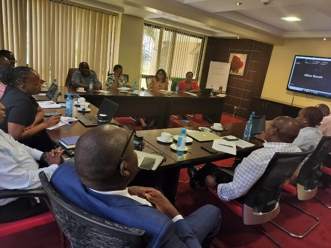
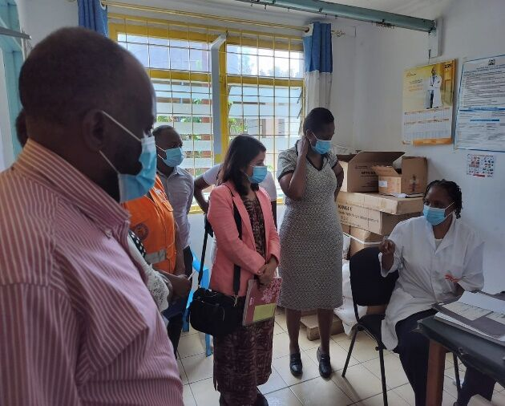
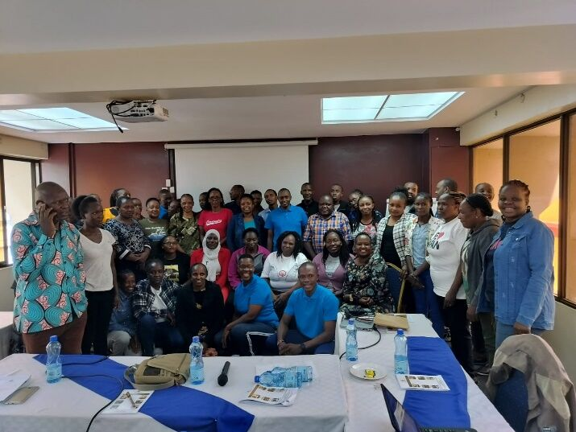
A Global Fund supported TB active case finding project implemented in Kiambu County through AMREF Health in Africa Kenya, strengthening quality TB, leprosy, and lung disease care and prevention.
The Kiambu Global Fund TB ACF Project is a donor-funded project supported by the Global Fund through AMREF Health in Africa Kenya.
The project implementation area is Kiambu County, which has a population of approximately 2.5 million people. The project runs for three years, from July 2021 to June 2024.
The goal is to ensure provision of quality care and prevention services for all people in Kenya with TB, leprosy, and lung diseases.
The project is implemented in all 12 sub-counties: Gatundu North, Gatundu South, Githunguri, Juja, Kabete, Kiambaa, Kiambu, Kikuyu, Lari, Limuru, Ruiru, and Thika.
Community active case finding is the backbone of the project, with key interventions aimed at improving TB case finding and retention.
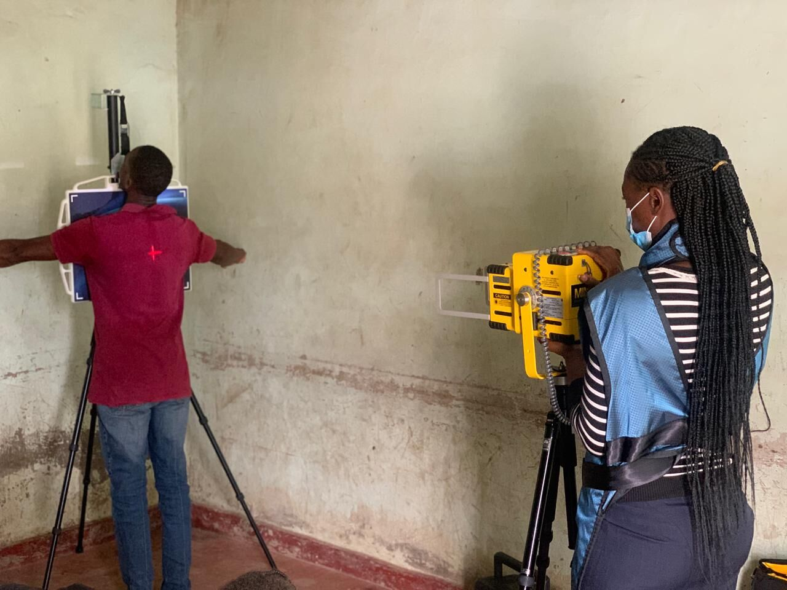
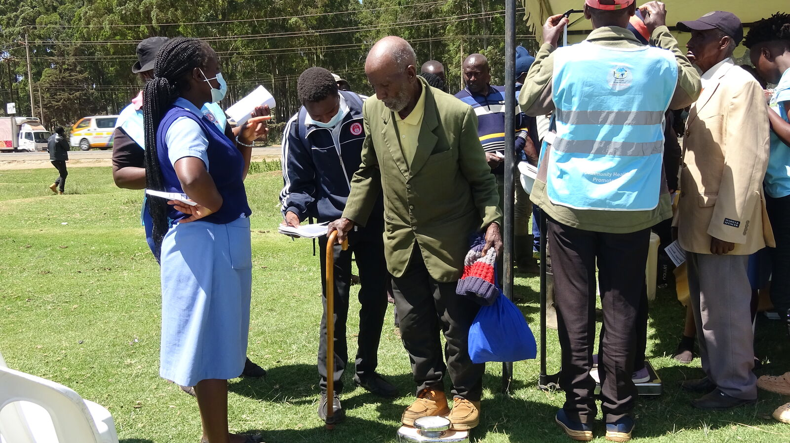
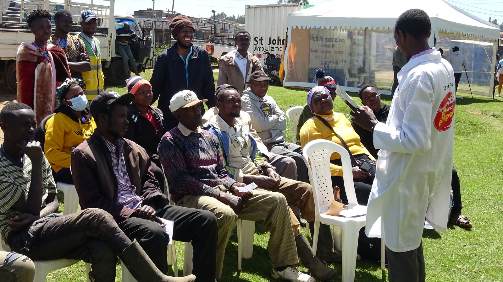
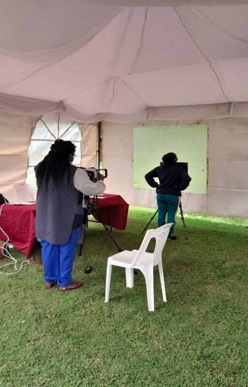
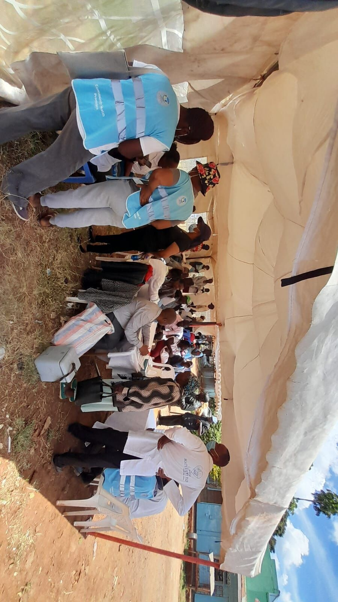
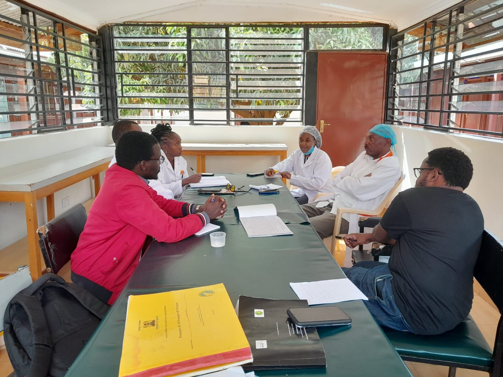
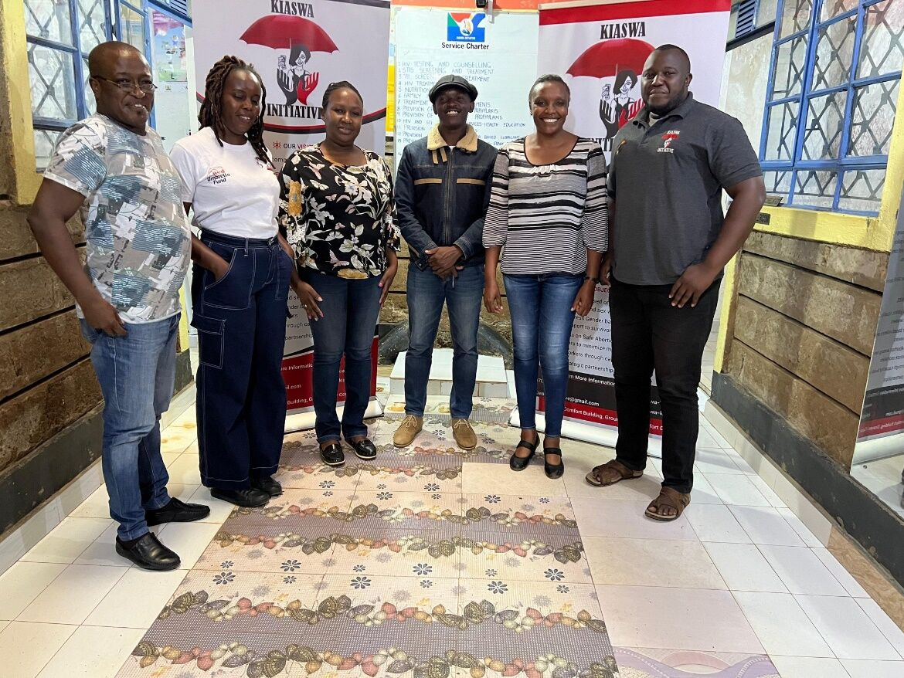
A Public-Private Mix project strengthening quality TB, leprosy, and lung disease services through private sector engagement and clearer referral pathways.
The Respiratory Society of Kenya, with funding from USG through CHS as the Principal Recipient in the Tamatisha TB Activity, is implementing the Public-Private Mix Project from May 2024 to February 2029.
The project operates across Kericho, Nakuru, Tharaka Nithi, Meru, Mombasa, Kirinyaga, Siaya, and Kisumu, with a focus on engaging healthcare providers in the private sector.
The project aims to ensure quality care and prevention services for people with TB, leprosy, and lung diseases, while sustaining private sector collaboration to streamline referral pathways for TB diagnosis and treatment.
A co-created work plan guides grant implementation. The PPM component aligns closely with NSP 23/24 - 27/28, which aims to enhance TB PPM facility coverage, standardize TB management, and optimize treatment outcomes.
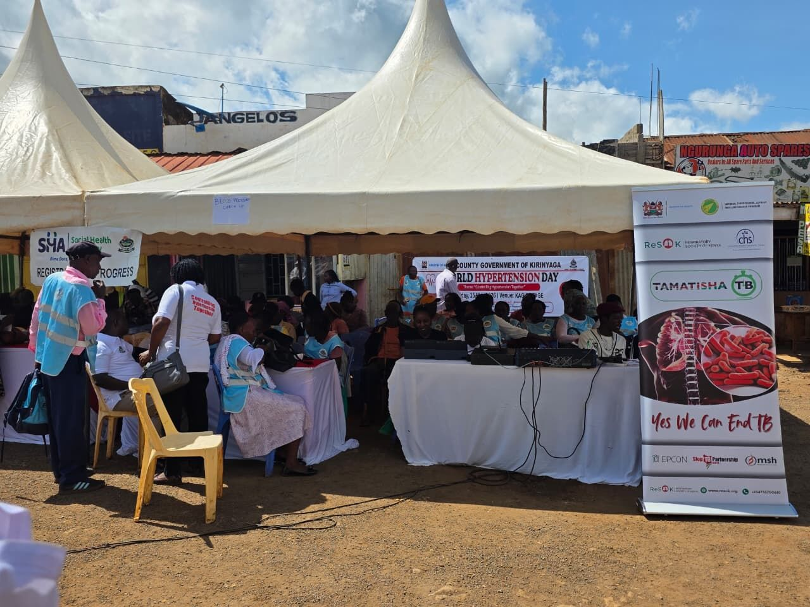
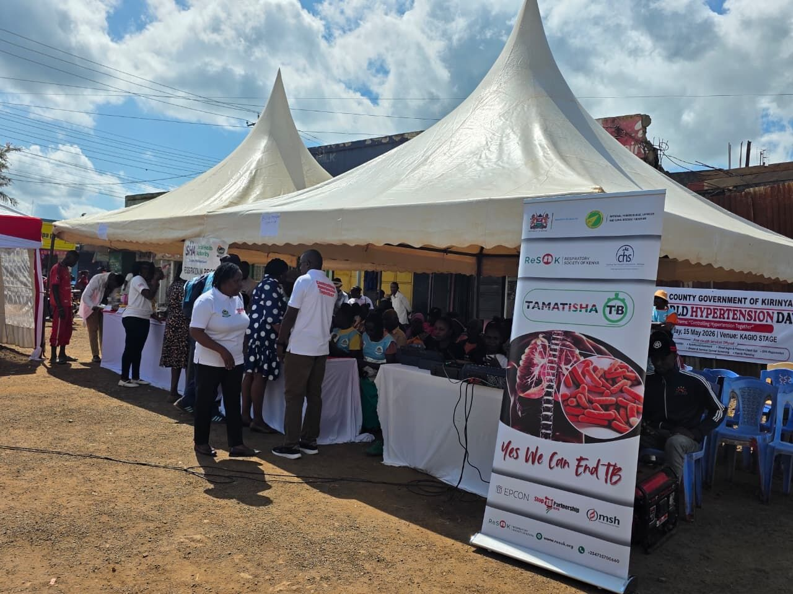
A Global Fund Public-Private Mix project engaging non-state healthcare providers to strengthen quality TB, leprosy, and lung disease care in Kenya.
The PPM project is funded by the Global Fund through Amref Health Africa - Kenya as the Prime Recipient, with ReSoK serving as the Sub Recipient.
This three-year project runs from June 2024 to July 2027 and is implemented in Nairobi, Kiambu, Nyeri, Murang'a, Machakos, Kilifi, Garissa, Narok, and Kajiado counties.
The objective is to ensure quality care and prevention services for all people in Kenya with TB, leprosy, and lung diseases, with a focus on engagement of non-state healthcare providers in private facilities.


A Global Fund supported county project advancing quality TB, leprosy, and lung disease care through community engagement across Kiambu County.
To ensure the provision of quality care and prevention services for people in Kenya with TB, leprosy, and lung diseases through community engagement, ReSoK was awarded this project by the Global Fund through Amref Health Africa.
Amref Health Africa is the Primary Recipient, while ReSoK is the Sub Recipient. The project is implemented in Kiambu County across all 12 sub-counties.
The implementation areas are Gatundu North, Gatundu South, Lari, Thika, Kikuyu, Githunguri, Juja, Kabete, Kiambaa, Kiambu, Limuru, and Ruiru.
A six-year cross-disciplinary global health research programme supporting policy and practice to transform gendered pathways to health for people with TB in urban settings.
LIGHT is a six-year cross-disciplinary global health research programme funded by UK aid and led by the Liverpool School of Tropical Medicine in collaboration with partners in Kenya, Malawi, Nigeria, Uganda, and the UK.
LIGHT aims to support policy and practice in transforming gendered pathways to health for people with TB in urban settings. The programme contributes to improved health and well-being, better socio-economic outcomes, equity, and the wider effort to end TB.
ReSoK is the LIGHT research partner in Kenya, carrying out a study titled "High TB prevalence among young people in Kenya: an assessment of critical gaps in the TB care cascade using a gender lens." The study focuses on the TB burden among young people, especially young men, to support tailored interventions.
On 16 January 2024, LIGHT Consortium partners in Kenya, AFIDEP and ReSoK, engaged the Ministry of Health's National TB Programme team to present protocols for two LIGHT research studies and seek partnership with the programme.
The engagement focused on identifying critical gaps in the TB care cascade among young people aged 15-24 years in Nairobi County through a gender lens. The work will assess losses across screening, diagnosis, treatment initiation, and treatment outcomes to inform gender-specific interventions across levels of care.
Participants emphasized the importance of gender-segregated data, including data from the National TB Programme's TIBU surveillance system, to support round-table discussions, evidence generation, policy development, and equitable access to TB services.
The second LIGHT study addresses the policy-practice gap through face-to-face workshops with healthcare workers and TB stakeholders.
On 14 March, the Respiratory Society of Kenya, with support from the LIGHT Consortium and in collaboration with Kenya's Ministry of Health, Division of National Tuberculosis, Leprosy and Lung Disease Program, held a TB symposium as a pre-World TB Day event.
The organising committee included Kenya Medical Research Institute, Centre for Health Solutions - Kenya, Stop TB Partnership Kenya, and Kenyatta National Hospital.
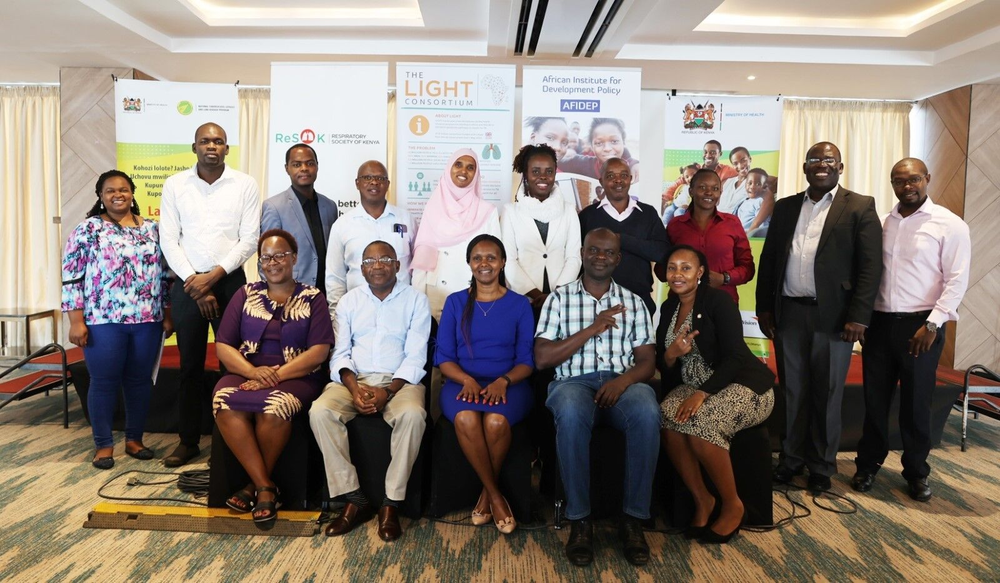
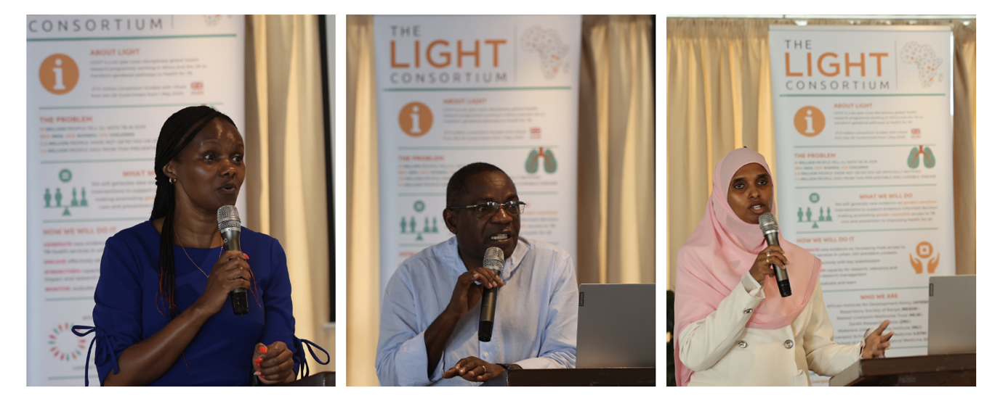
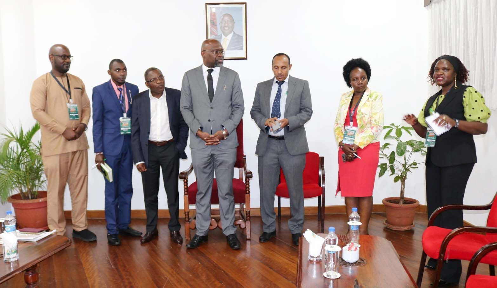
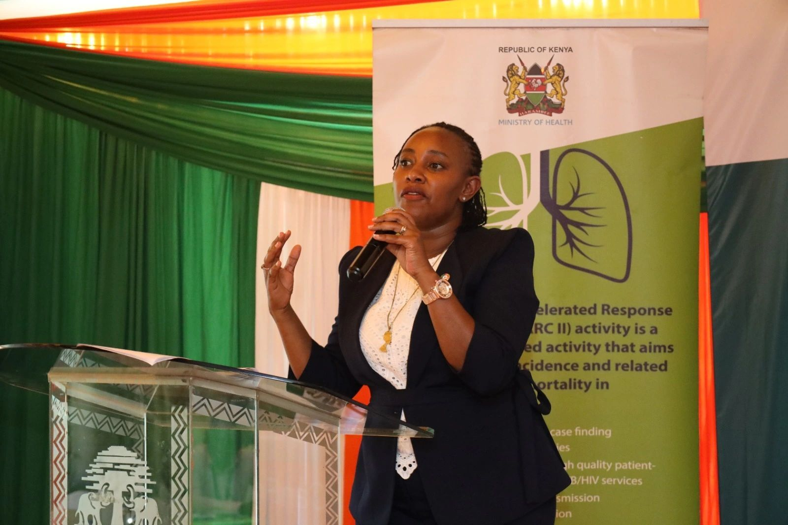
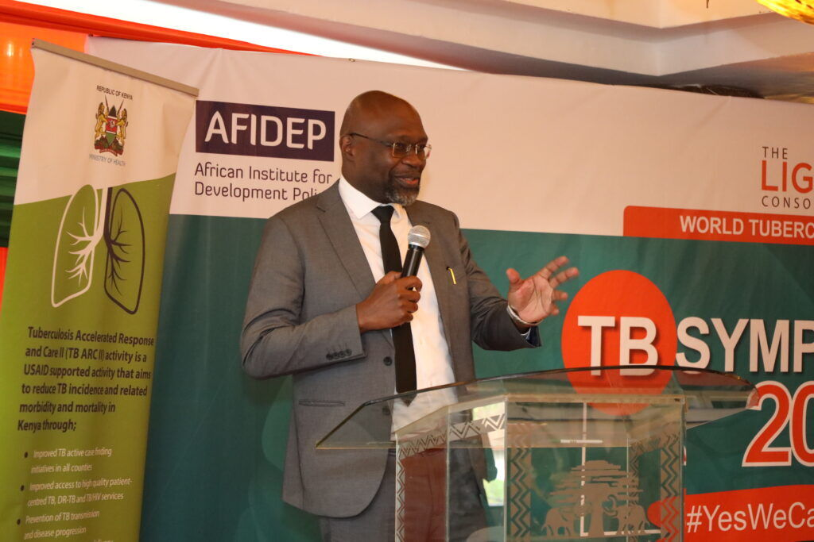
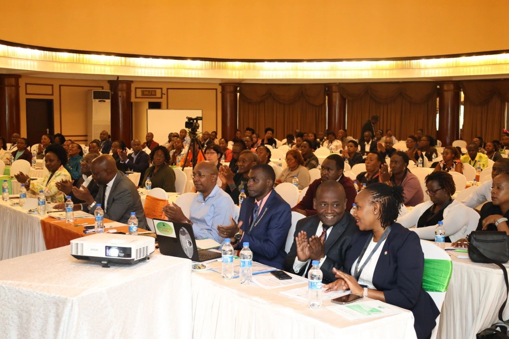
A four-year NIHR funded programme using transdisciplinary methods to develop novel approaches to integrated TB and respiratory care in Africa.
ITARA focuses on practical models that connect TB services with broader respiratory care so patients can move through screening, diagnosis, referral, and long-term support more smoothly.
The project aligns with ReSoK's strategic pillars on partnership, research, education, and policy advisory, bringing clinical expertise and implementation insight into integrated care design.
A research collaboration focused on understanding Kenyan interstitial lung disease epidemiology and improving ILD care through national multidisciplinary expertise.
The ALBORADA work supports better understanding of ILD patterns in Kenya and helps build a multidisciplinary approach for diagnosis, referral, discussion, and care planning.
This project contributes to a stronger evidence base for specialist respiratory care and supports clinicians managing complex lung disease.
A project addressing lung cancer as a major public health concern with severe economic impact, especially in sub-Saharan Africa.
The fund supports ReSoK's work to highlight the burden of lung cancer and strengthen professional awareness, clinical collaboration, and patient-centered pathways.
The project fits within ReSoK's broader mission to improve lung health through advocacy, education, research, and multidisciplinary partnerships.
Each project turns the society's lung health mission into practical action across services, communities, research, and policy.
Working with ministries, counties, universities, clinicians, funders, and communities.
Building evidence, sharing knowledge, and strengthening learning for better respiratory health planning.
Promoting awareness, prevention, access to care, and improved lung health outcomes.
Informing strategy, guidelines, and multisectoral decisions that shape respiratory health.
ReSoK's project work includes partnership, knowledge sharing, advocacy, and policy support to strengthen patient care and health systems.
Respiratory Society of Kenya is proud to support health systems with equipment and technical collaboration that improves critical care capacity and patient outcomes. Respiratory Society of Kenya
Connect with ReSoK to explore research, training, advocacy, and implementation partnerships.